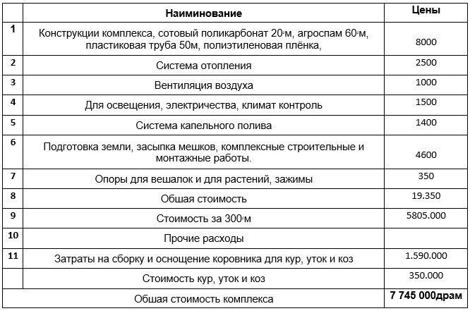
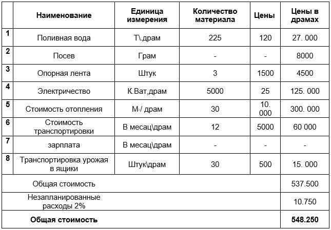

1.Оснавные цели проекта.
После сорокачетерёх дневной войны из-за потери территориальной цельности в Арцахе возникли проблемы с сельскохозяиством. Важнейшем жизненном фактором стало строительство малых тепличных комплексов. Вашему вниманию представляется проек с плошадю 300кв.м., строительство которого обеспечит работой около 7 человек и воздействует на прогрессивность продовольствии, поскольку мы будем приобретать всё необходимое для строительство в Арцахе и в Армении.
Уже в готовом комплексе могут работать 2 человека. Комплекс может обеспечить эко продуктами, овощами, мясом, яйцами, молоком.
2. Описание комплекса и цель использвания.
Комплекс состоит из параллельных теплиц туннельного типа шириной 5м, высотой 2.8м, длиной 20м, за которыми расположена небольшая ферма шириной 2м, высотой 2.8м и длиной 15м. Передние и задние части комплекса покрыты 8мм сотовым поликарбонатом. Борта также покрыты сотовыми поликарбонатоми высотой 1м. Остальные части покрыты агроспамом. А зимой можно покрыть сверху ещё и полиэтиленовой плёнкой.
В задней конструкции устоновлено нагревательное устройство. Строятся гнёзда для 20 кур, 25 уток и коровник на 2 коз. Примечательно, что выдыхаемый животными газ способствует фотосинтезу растений, а навоз используется как удобрение. Излишки овощных культур, выращиваемых в теплицах, используются в качестве корма для птиц и животных, что составляет около 40% их корма. Этот тип комплекса позволит пользователю дополнительно иметь яйца, мясо птицы, козлятину и молоко по относительно низкой стоимости.
Комплекс отапливается разработанным устройством, который работает на дровах или газе. Нагретый воздух по специальным трубам распределяется по всему комплексу и нагревает его. В трёх теплицах комплекса на 902 м. можно выращивать любые овощи и зелень.
Предлагаемый новый способ возделывания позволяет построить теплицу на любом почвенном покрове, что является немаловажным обстаятельством. В програму также входит обучение сотрудников комплекса.
3․ Средний расчёт стоимости комплекса за 1м. В драмах
4. Производственная програма. Затраты

1. Выращивая 500 кустов фасоли можно получить около 300 кг стручковой фасоли. Среднегодовая цена стручковой фасоли 900 драм, таким образом, вы получите 150000 драм.
Если вырастить 200 томатных кустов можно получить 1100 кг томатов в год, из которых вы получите 900.000 драмов.
Если вырастить 100 кустов огурцов, то можно получить 1000 кг огурцов, среднегодовая цена за килограмм 300 драмов, от его продажи вы получите 300.000 драмов.
Вырастив зелень на 702 м получится около 1050 пучков зелени, средняя цена одного пучка зелени 250 драмов, от сбора урожая мы получим 262.500 драмов.
Общая сумма, полученная от реализации овощей и зелени составит 1612500 драмов.
25. 20 кур несут в средем 3600 яиц в год, при продаже по 80 драмов получится 288000 драмов
6. После содержания 25 уток в течение четырёх месяцев, вы можете продать одну утку за 5000 драмов, через год можно содержать и продать 65 уток, что даст вам 325000 драмов.
7. В первый год от коз родится один козлёнок, и собственник комплекса получит козье молоко которое составляет около 80000 драмов.
Общий доход составляет 2.305.500 драмов ежегодно.
4․Расчёт программ
Затраты

Общая стоимость Проекта 7 745000 драм + 548.250 драм = 8 293 250 драм
Затраты на выращивание овощей и зелени – 548.250 драм.
2. Стоимость покупки кур, уток, коз в первый год в расчёте проекта 350.000 драм.
3. Затраты на покупку корма – 25.000 драм.
Ожидаемый результат от комплекса через год – 2 305 500 – 548 250 = 1757250др.